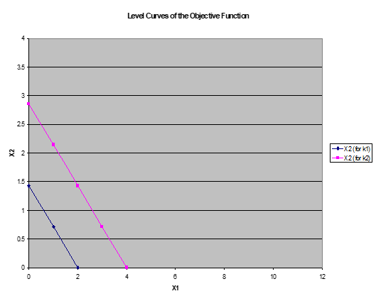

class: left, middle background-image: url(chef.webp) background-position: right background-repeat: no-repeat # <span style="color: rgb(214, 175, 91)">PICOPEKOVA OPTIMIZACIJA</span> --- # <span style="color: rgb(214, 175, 91)">Linearno programiranje</span> <br> Linearno programiranje ali optimizacija je iskanje maksimuma ali minimuma dane funkcije na dovoljenem območju. Uporablja se za predstavitev najrazličnejših situacij odločanja, v današnji nalogi pa bomo iskali najboljšo kombinacijo proizvodov, ki jih proizvaja podjetje. --- # <span style="color: rgb(214, 175, 91)">Slovar izrazov</span> * **Optimizacija**: maksimiziranje ali minimiziranje funkcije ob upoštevanju omejitev * **Namenska ali ciljna funkcija**: funkcija, ki jo je treba maksimizirati ali minimizirati * **Izbirne spremenljivke**: spremenljivke, katerih vrednost je treba določiti tako, da bo namenska funkcija maksimizirana ali minimizirana * **Parametri**: spremenljivke, katerih vrednost je dana oziroma določena pri iskanju optimalne rešitve določenega problema * **Množica omejitev**: množica vrednosti, pri katerih izbirne spremenljivke izpolnjujejo vse omejitve problema --- # <span style="color: rgb(148, 147, 143)">Naš primer</span> Imamo picerijo, ki pripravlja mini pice in pice calzone. Za izdelavo vsake od njih potrebujejo dva različna prispevka: delovni čas priprave pice in čas peke. Na voljo je omejena količina delovnega časa, ki ga označimo z $C_1$, in omejena količina časa peke, označena z $C_2$. Predpostavimo, da so sestavine mini pic in pice calzone enake. Prodajajo pa se po različnih cenah, in sicer mini pice po $P_1 = 5$€ in pica calzone po $P_2 = 7$€. -- **Vprašanje:** Kakšna je optimalna kombinacija mini pic in pic calzone ($X_1$ in $X_2$), ki jih mora proizvajati picerija? --- # <span style="color: rgb(214, 175, 91)">Namenska funkcija</span> Namenska funkcija je funkcija izbirnih spremenljivk, ki jih želimo maksimizirati. Pri problemu linearnega programiranja je namenska funkcija linearna glede na izbirne spremenljivke. V našem primeru namenska funkcija računa prihodek picerije. Pri tem sta izbirni spremenljivki število mini pic in število calzone pic ($X_1$ in $X_2$). Namensko funkcijo prihodka picerije torej zapišemo kot: > $R(X_1, X_2) = P_1 X_1 + P_2 X_2$. --- ## <span style="color: rgb(149, 196, 188)">Naloga 1</span> <div class="okvir">Poustvarite preglednico, ki je na sliki. Polja obarvana z rumeno barvo so vnaprej podane vrednosti, polja obarvana z oranžno pa so tista, ki jih je potrebno izračunati. V tem primeru računamo prihodek picerije, če mini pice stanejo 5€ in jih prodamo 10, calzone pa stanejo 7€ in jih prodamo 15.</div> Namig: Izraz v celici G4 lahko izračunate s funkcijo *SUMPRODUCT*. --- # <span style="color: rgb(214, 175, 91)">Nivojnice namenske funkcije</span> Nivojnico namenske funkcije dobimo, če funkcijo enačimo s konstanto. Torej so nivojnice namenske funkcije krivulje, na katerih je vrednost funkcije enaka. Naj bo $k$ poljubna konstanta. Potem so nivojnice prihodkov picerije podane z enačbo $R(X_1, X_2) = P_1 X_1 + P_2 X_2 = k$. --- ## <span style="color: rgb(149, 196, 188)">Naloga 2</span> <div class="okvir">Spremenite preglednico, ki ste jo pripravili v prejšnjem koraku, in vanjo vključite dve vrednosti za $k$ (izberemo si vrednosti $k_1 = 10$ in $k_2 = 20$) ter vrednosti za $X_1$ od 0 do 10 (v stolpcu B). V polja C12 do C22 vnesite tako formulo, da bo izračunala vrednost $X_2$ na nivojnici $k_1$, v poljih D12 do D22 pa naj enaka formula izračuna vrednost $X_2$ na nivojnici $k_2$.</div> --- ## <span style="color: rgb(149, 196, 188)">Naloga 3</span> <div class="okvir">Naredite graf nivojnic iz prejšnjega koraka z uporabo korelacijskega diagrama XY. (Če spreminjamo vrednost konstante, se nivojnica premakne.)</div>  --- S spreminjanjem parametrov namenske funkcije se spreminja naklon nivojnic. V našem primeru sta parametra namenske funkcije ceni pic. Levi graf prikazuje nivojnici za konstanti $k_1=10$ in $k_2=20$ s cenami $P_1=5$ in $P_2=7$. Desni graf prikazuje nivojnici za isti konstanti, vendar z obrnjenimi cenami. --- # <span style="color: rgb(214, 175, 91)">Množica dopustnih rešitev</span> Množica dopustnih rešitev je množica možnih vrednosti za $X_1$ in $X_2$, ki jih predstavimo z enačbami in neenačbami. V naši piceriji sta za vsako od pic potrebna delovni čas in čas peke. Predpostavimo, da je za calzone potrebnega manj delovnega časa kot za mini pice (ker morajo biti mini pice umetniško predstavljene), vendar je za calzone potrebnega več časa peke kot za mini pice (ker so debelejše). Recimo, da je za izdelavo vsake calzone pice potrebnih 6 minut delovnega časa, za izdelavo vsake mini pice pa 10 minut. Predpostavimo, da ima picerija v 8 urni izmeni zaposlenega le enega delavca, tako da je na voljo 480 minut delovnega časa. Skupno število proizvedenih mini pic $X_1$ in calzonov $X_2$ mora zadostiti naslednji linearni neenakosti: $10X_1 + 6X_2 \le 480$. Ta izraz je v obliki $a\_{11} X\_1 + a\_{12} X\_2 \le C\_1$, kjer so $a\_{11}$, $a\_{12}$ in $C\_1$ konstante (parametri). --- Recimo, da je čas peke vsake mini pice 4 minute, čas peke vsake calzone pice pa 6 minut. Predpostavimo, da je pečica na voljo skupaj 400 minut v 8 urni izmeni (ker potrebuje 80 minut čiščenja na izmeno). Poleg tega morata biti število mini pic $X_1$ in število calzone $X_2$ nenegativna. Nenegativnost števila pic nam da omejitve: $X_1 \ge 0$ in $X_2 \ge 0$. <br> ### <span style="color: rgb(148, 147, 143)">Opomba</span> Zapis z indeksom je nameren. Pri reševanju problema linearnega programiranja kot iskanja optimalnega števila proizvodnje dveh dobrin je $a\_{11}$ število vira 1, ki se uporabi za proizvodnjo vsakega kosa blaga 1, $a\_{12}$ pa je število vira 1, ki se uporabi za proizvodnjo vsakega kosa blaga 2. $C\_1$ je skupna količina razpoložljivega vira 1. --- ## <span style="color: rgb(149, 196, 188)">Naloga 4</span> <div class="okvir">Zapišite linearno neenakost, ki predstavlja omejitev časa pečenja pic. Neenakost zapišite v obliki $a_{21} X_1 + a_{22} X_2 \le C_2$, kjer $C_2$ predstavlja celoten čas, ko je pečica na voljo, $a_{21}$ čas peke mini pice in $a_{22}$ čas peke calzone pice.</div> <br> <button class="gumb" onclick="klik_4()">Klikni za rešitev</button> <br> <label id="naloga-4"></label> --- ## <span style="color: rgb(149, 196, 188)">Naloga 5</span> <div class="okvir">Spremenite preglednico iz naloge 2, da bo videti kot je prikazano na sliki. V polji B17 in B18 vnesite logične stavke, ki bodo vrnili "izvedljivo", če sta neenakosti za čas priprave in čas peke pic izpoljneni za vrednosti $X_1$ in $X_2$ iz polj B9 in C9, sicer pa naj vrnejo "neizvedljivo". Pri tem upoštevajte omejitve nenegativnosti.</div> --- ## <span style="color: rgb(149, 196, 188)">Naloga 6</span> <div class="okvir">Spremenite preglednico iz naloge 6, da bo videti tako kot na sliki. Za izbrano vrednost $X_1$ (podano v polju B) izračunajte maksimalno možno vrednost $X_2$ glede na omejitveno neenakost. V poljih C upoštevajte neenakost za čas priprave, v poljih D pa neenakost za čas peke pice.</div> --- ## <span style="color: rgb(149, 196, 188)">Naloga 7</span> <div class="okvir">Za vsako omejitev neenakosti (čas priprave pic, čas peke in nenegativnostne omejitve) narišite graf enačbe tj. znak $\le$ nadomestite z znakom $=$. Z upoštevanjem vseh omejitev neenakosti in nenegativnosti v splošnem primeru dobimo polieder.</div> <div class="okvir">V našem primeru imamo samo dva produkta $X_1$ in $X_2$, zato dobimo za rešitev kar lik v ravnini. Določite koordinate vseh vrhov oziroma ekstremnih možnosti na tem liku (tj. oglišča tega lika). Svoj odgovor primerjajte s sliko na naslednji prosojnici, kjer so oglišča označena z A, B, C in D.</div> --- <button class="gumb" onclick="klik_7()">Klikni za koordinate oglišč</button> <br> <label id="naloga-7"></label>